訪客透過「i史博」App，在戶外場域參與錦鯉互動、角色合照、天燈祈福與隱藏探索。我將既定企劃轉為操作流程與介面，並依現場使用情況調整提示與文字呈現。
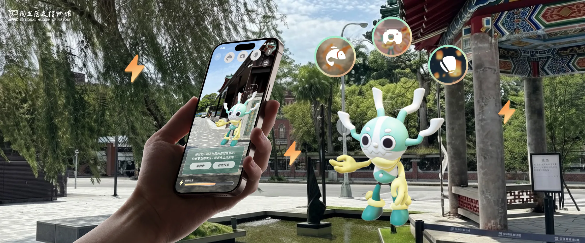
我負責 User Flow、Wireframe、可點擊 Prototype 與高保真 UI，設計關卡入口、操作提示、按鈕與互動狀態，並參與現場操作確認與介面調整。
四款關卡的主題與主要玩法由館方、客戶與 PM 定義；角色造型、3D 建模、AR 定位與渲染由其他團隊負責。
戶外 AR 整合在既有的「i史博」App 中。訪客從 AR 探索列表選擇關卡，進入相機畫面後，可以自由探索，或跟著虛擬角色前往關卡。完成後回到探索介面，再選下一關。這兩種探索方式由館方與企劃規劃，我將它們整理成 User Flow，釐清入口、關卡、完成畫面與返回路徑之間的關係。
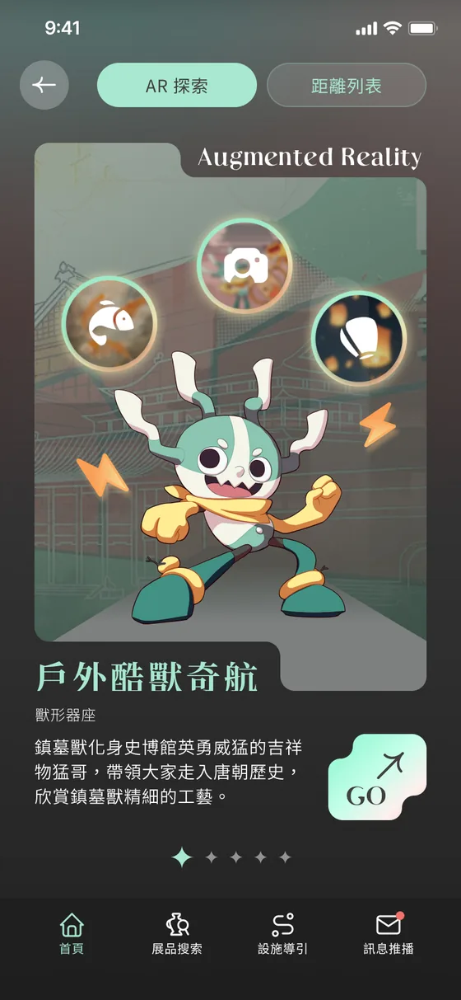
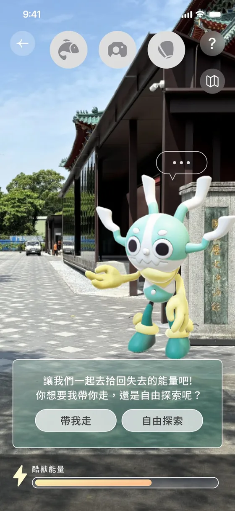
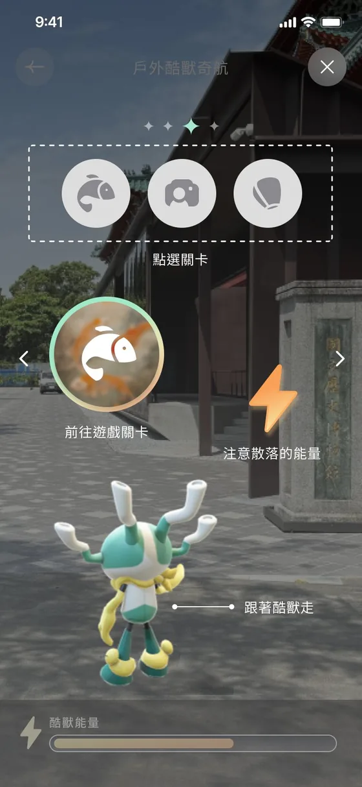
完整 User Flow：
依四款 AR 關卡的操作需求，設計對應的提示、控制與結果畫面。以下呈現各關卡的介面與我的參與範圍，天燈的操作流程會在下一章說明。
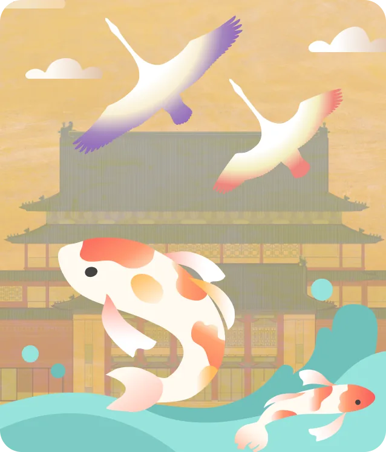
負責錦鯉互動的操作提示與控制介面。
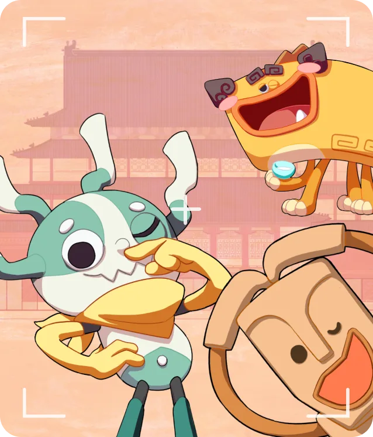
設計與虛擬角色合照的拍照介面與操作狀態。
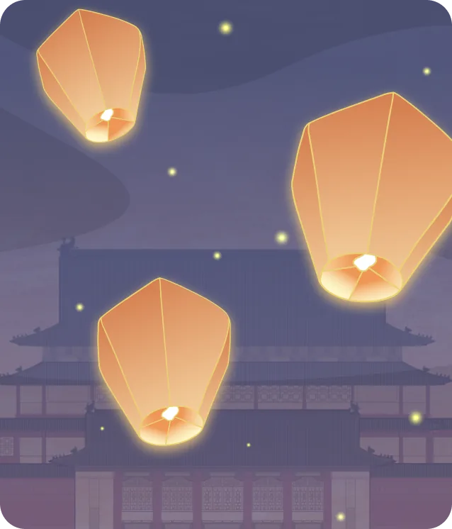
設計從製作祝福到施放完成的流程與 Prototype。
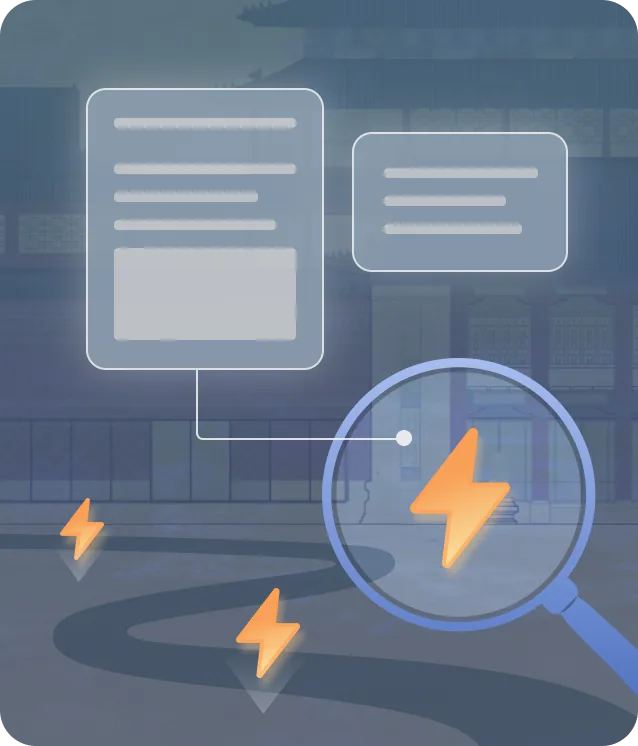
設計 AR 放大鏡、資訊卡片與完成狀態；探索點由館方規劃。
「開館點燈祈福」的主要玩法與基礎流程由館方與 PM 提供。我參與畫面之間的切換流程，以及確認、返回、重拍、儲存與分享等操作設計，並製作可點擊 Prototype 供團隊確認。
從關卡卡片進入後，教學會說明兩種製作方式：繪製圖案或輸入文字。完成後，按「下一步，查看天燈」進入 AR 畫面。
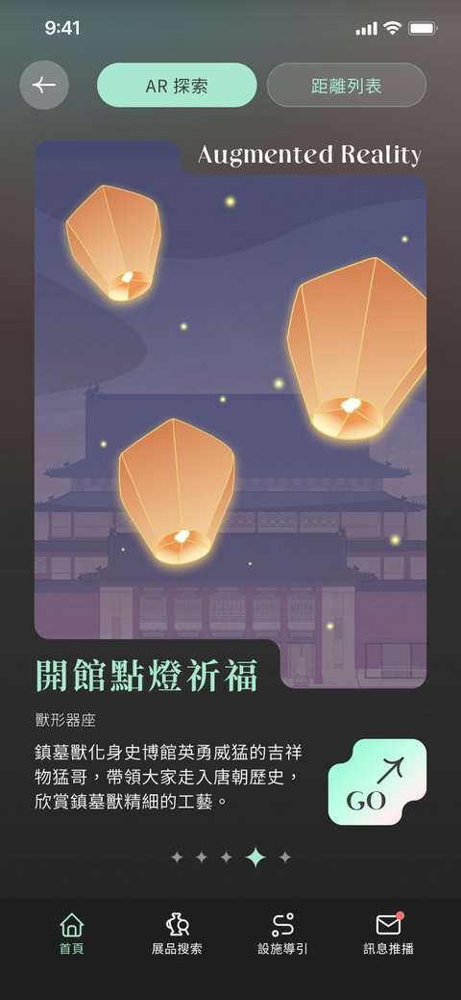
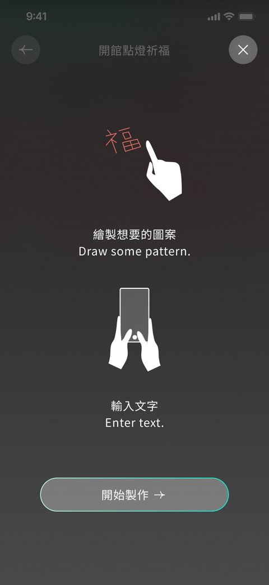
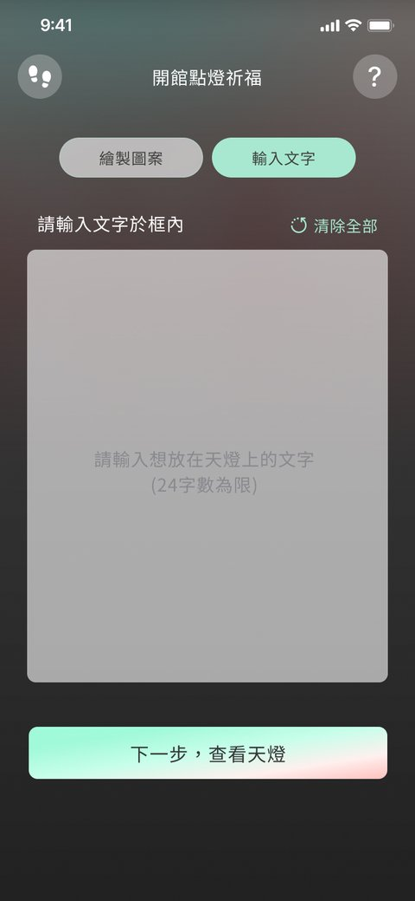
製作祝福內容時，使用者可以繪製圖案或輸入文字。我沿用既有 App 的頁籤樣式，維持介面外觀的一致性。
切換繪圖與文字方式前，介面會提示原本內容將被清除，確認後才切換。
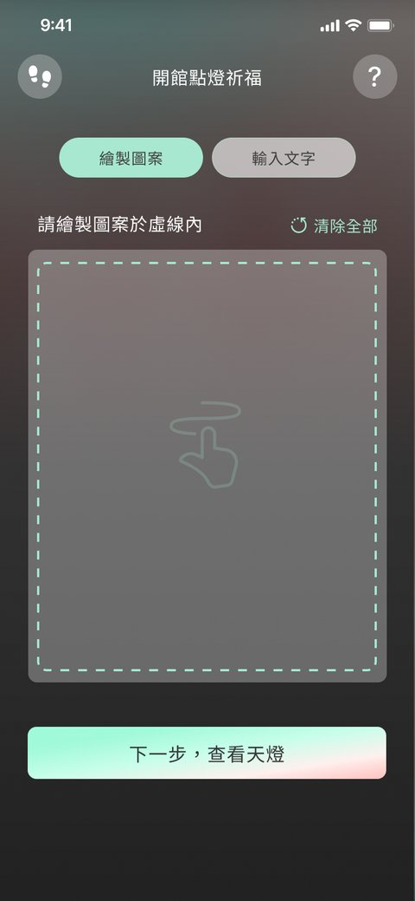
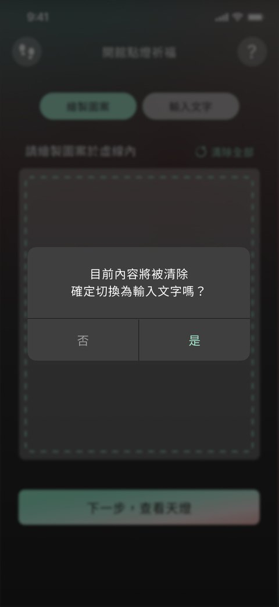
施放天燈時，我收起擺放與施放按鈕，保留拍照操作，讓畫面接近全螢幕相機，幫助使用者辨認此時可以拍攝。
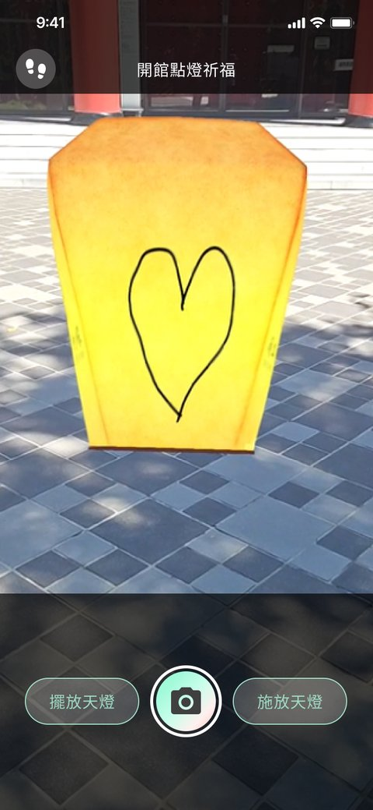
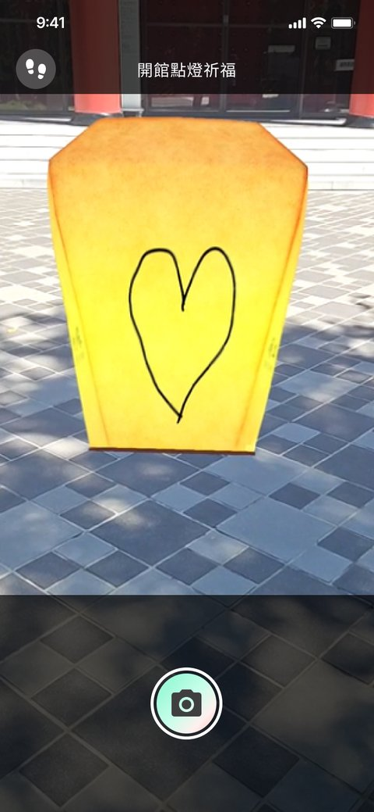
完成後可以重拍、儲存或分享，並透過下方按鈕回到戶外探索介面。
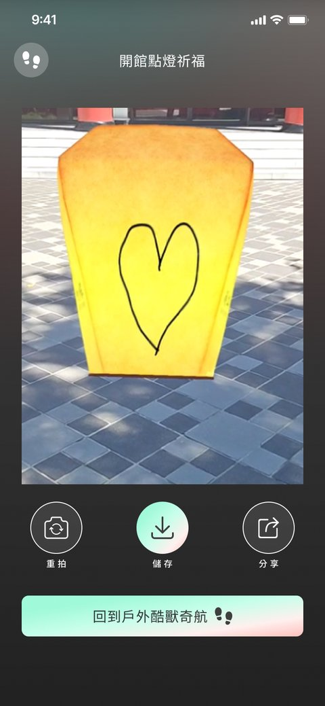
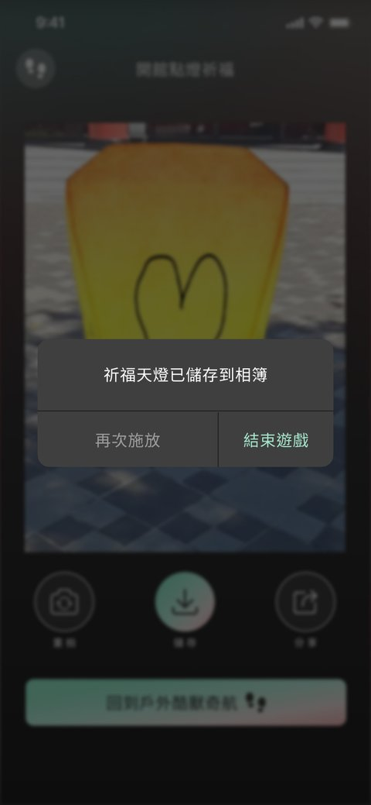
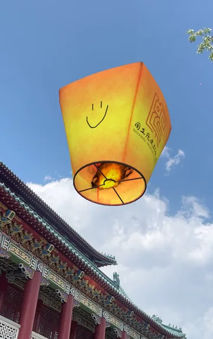
我在辦公室透過 Prototype 與測試版本確認流程，也到史博館現場操作各關卡。AR 以即時相機畫面為背景，色彩與亮度會隨場景改變，提示與文字可能不容易看清楚。
現場確認後，我調整了提示與文字底色：隱藏探索的文字由偏淺的底色改為深底白字，以增加文字與背景的對比；按鈕的位置、大小與視覺層級也依現場操作調整。AR 物件的位置、定位與載入等技術問題，則回報給工程團隊處理。
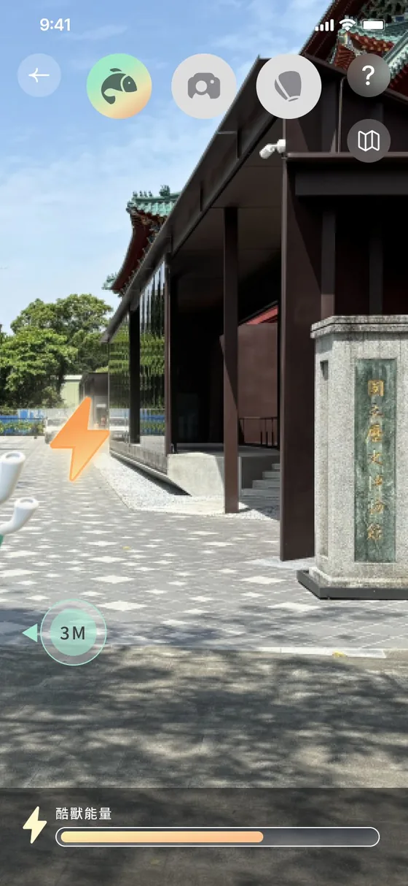
調整後團隊將錦鯉互動、角色合照、天燈祈福與隱藏探索整合至既有「i史博」App。我交付四款互動的操作流程、Wireframe、可點擊 Prototype 與高保真 UI。
工程實作後，我參與現場操作確認，依相機背景與使用情境調整文字底色、按鈕位置及視覺層級。
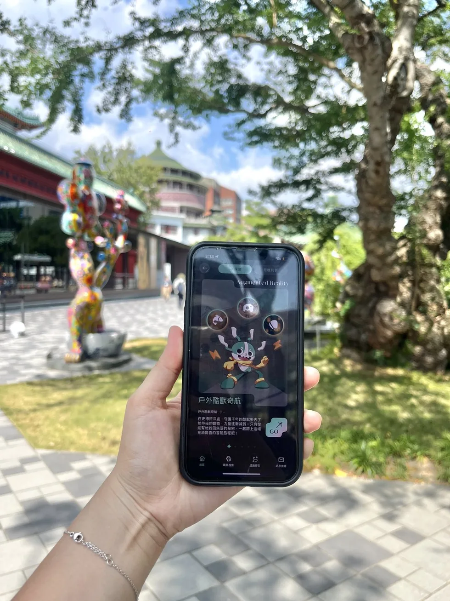
延伸既有 App 時，需要兼顧原本的介面樣式與不同關卡的操作需求。這次經驗也讓我更重視現場確認：即使流程在設計稿中看來可行，提示與按鈕仍可能受到相機背景影響，需要到實際場景檢查與調整。
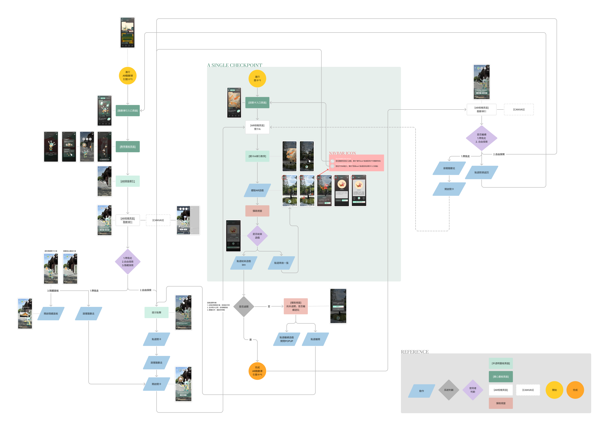